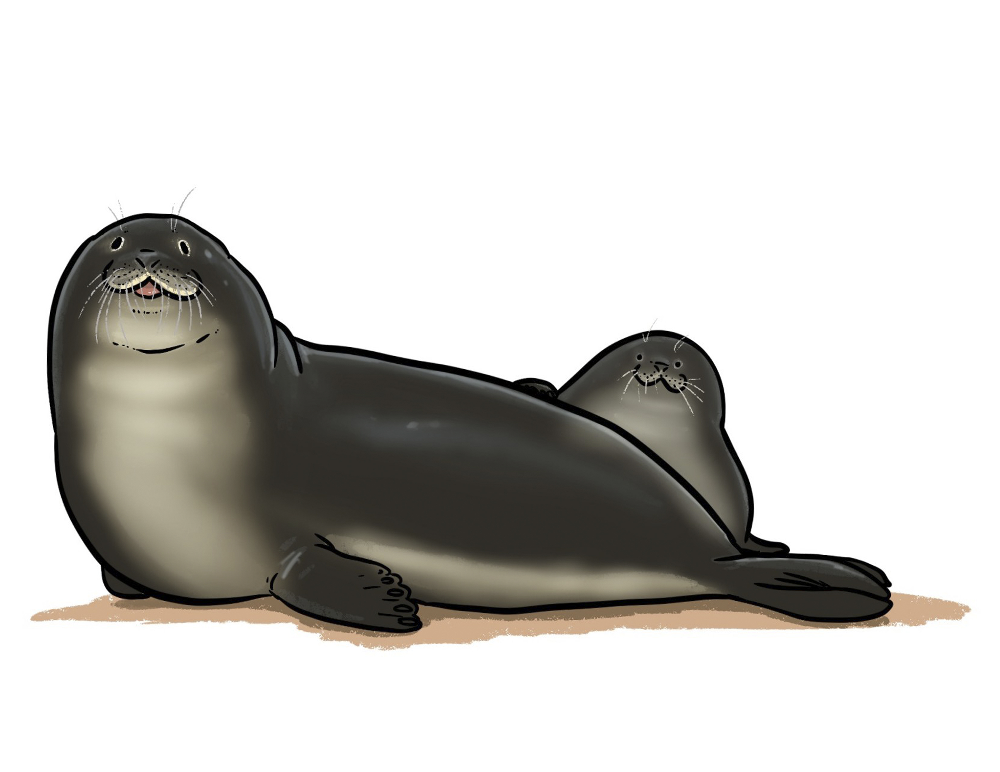

Understanding biological change, past and present
At the Gaughran Lab, we study how evolutionary forces shape adaptive and deleterious variation, and how that knowledge can inform conservation. We combine genomic data, cell culture experiments, long-term observational data, and museum collections to investigate how genetic variation arises, how populations change through time, and how species diversify.
We are based in the Department of Integrative Biology at UC Berkeley.
